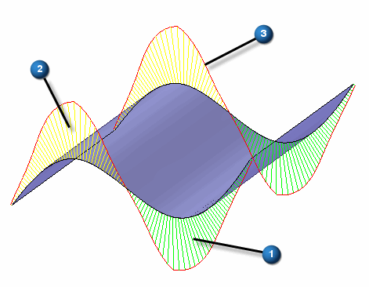

Surface Visualization Settings dialog box
- Show surface visualization check box
-
Turns the visualization display on or off.
- Clear All Section Surfaces
-
Clears all selections for surface visualization.
- Surface mesh
-
Mesh density
- Direction 1 check box
-
Controls the display of the surface mesh lines along direction 1.
Mesh density Direction 1 slider bar controls the density of surface mesh. Sparse to Dense (Sparse =1 and Dense =20).
Surface mesh Direction 1 Color controls the color of mesh in direction 1.
- Direction 2 check box
-
Controls the display of the surface mesh lines along direction 2.
Mesh density Direction 2 slider bar controls the density of surface mesh. Sparse to Dense (Sparse =1 and Dense =20).
Surface mesh Direction 2 Color controls the color of mesh in direction 2.
- Curvature comb
-
Comb color
- Direction 1 check box
-
Controls the display curvature comb along direction 1.
Curvature comb Direction 1 Color 1 controls the first color of curvature in direction 1 (Color below curve). Curvature comb Direction 1 Color 2 control the second color of curvature in direction 1 (Color above curve).
The Density and Magnitude of the curvature combs are controlled by the slider bar
The Density range values are Sparse=5 and Dense 100. The Magnitude range values are Small=0 and Large=10.
The following illustration shows the curvature combs colors. The item labeled as 1 is the Direction 1 Color 1 (Color below curve). The item labeled as 2 is Direction 1 Color 2 (Color above curve). The item labeled as 3 is the Comb curve color.

- Direction 2 check box
-
Controls the display curvature comb along direction 2.
Curvature comb Direction 2 Color 1 controls the first color of curvature in direction 2 (Color below curve). Curvature comb Direction 2 Color 2 control the second color of curvature in direction 2 (Color above curve).
The Density and Magnitude of the curvature combs are controlled by the slider bar.
The Density range values are Sparse=5 and Dense 100. The Magnitude range values are Small=0 and Large=10.
- Comb curve
-
Controls the color of curvature comb curve.
- Close
-
Closes the dialog box.
- Reset
-
Resets all controls to default values.
- Help
-
Accesses the help command for surface visualization.
How do I
Display zebra stripes on a partDisplay curvature shading on a model
Visualize a surface
Learn more
Evaluating surfacesEvaluating and repairing foreign data
Look up more details
Show Zebra Stripes commandZebra Stripes Settings command
Show Curvature Shading command
Curvature Shading Settings command
Curvature Shading Settings Dialog Box
Show Draft Face Analysis command
Draft Face Analysis command bar
Draft Face Analysis dialog box
Draft Face Analysis Settings command
Surface Visualization command